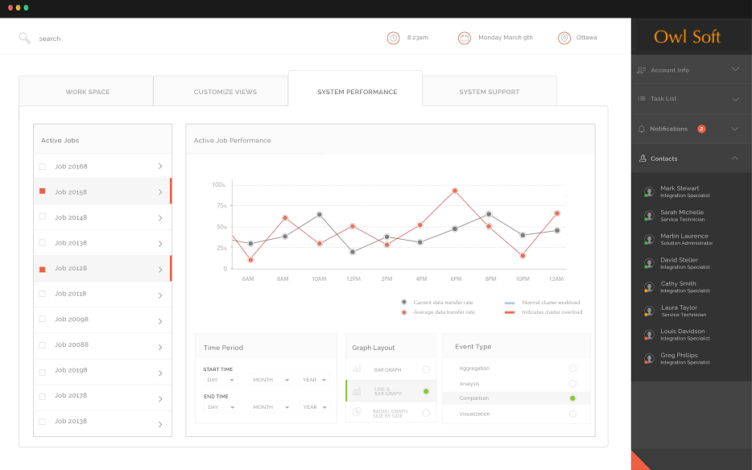

System performanceHistory | Edit
MobileView reports on system performance.
The System Performance Tab provides a data view of your project's progress towards its targets. Using the Data View widget in the top right hand corner, you can manipulate the data stream:
- Change the time period displayed using the (insert time period icon) icon.
- Select different tasks to see how specific aspects of your project are progressing using the (insert task icon) icon.
Figure: MobileView Performance Monitor
The System Performance tab provides the ability to monitor the
performance of selected cluster hosts and specific processing jobs. In order to facilitate this,
the System Performance tab provides simple mechanisms for selecting
active jobs (tasks), setting the time period
within which analysis and reporting will occur, and the type of graphical
layout and event type will be applied.
- Active Jobs Analysis
- Based on the Active Clusters selected in the Workspace view, the subordinate active jobs will be displayed.
- The data stream in the data view will be updated to reflect the active jobs selected.
- These settings will be maintained until changed.
- These settings can be saved for later use or shared with colleagues.
- Time Periods
- Use the Time Period controls in the System Performance view to constrain the analysis being performed to a specific time period.
- Use the date controls to set a start and end time for the analysis window.
- When you select a date control, a Calendar View will open.
- Within the Calendar View, start and end dates can be chosen.
- The Calendar View provides fields for designating specific start and end times.
- The Calendar View provides the option to define rules that will be used to automatically select date and time ranges.
- The data stream in the data view will be updated to reflect the time period selected.
- These settings will be maintained until changed.
- These settings can be saved for later use or shared with colleagues.